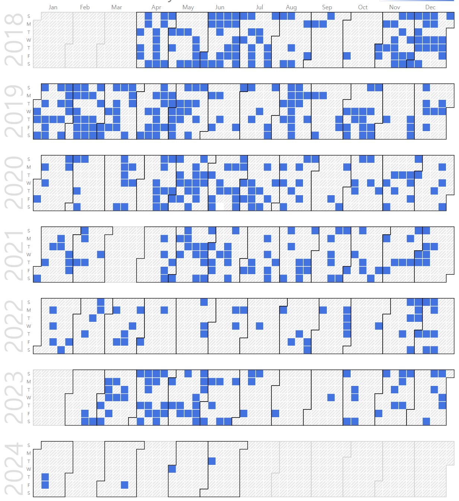
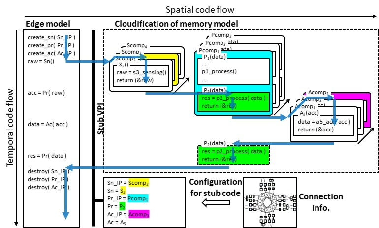
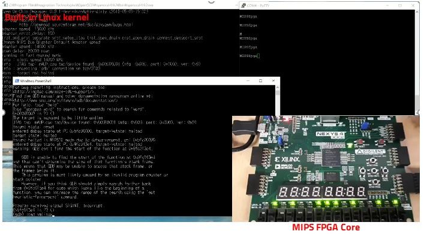

Dongkyu Lee (Integrated Ph.D. Student)
 |
Ph.D Candidate. |
Repository Commit History
|  |
Introduction
Bio Sketch
 Mr. Lee received his B.S. Degree (Summa Cum Laude) in Electronics Engineering at Kyungpook National University, Daegu, Korea in 2018. His research interests include high-performance acceleration with user behavior-based learning edge system. For the basis of intelligent edge system study, his research focused on designing energy-efficient cloud-connected processors in VLSI chip level using on-demand remote code execution, that can pervasively accelerate lots of services. Currently, he is focusing on energy-efficient, on-demand, real-time hardware acceleration based system, that can handle large amount of data occurring at the edge devices. He is pursuing toward obtaining his Ph.D. degree in KNU. He published several journal/conference papers in cloud-connected IoT software and hardware architecture.
Mr. Lee received his B.S. Degree (Summa Cum Laude) in Electronics Engineering at Kyungpook National University, Daegu, Korea in 2018. His research interests include high-performance acceleration with user behavior-based learning edge system. For the basis of intelligent edge system study, his research focused on designing energy-efficient cloud-connected processors in VLSI chip level using on-demand remote code execution, that can pervasively accelerate lots of services. Currently, he is focusing on energy-efficient, on-demand, real-time hardware acceleration based system, that can handle large amount of data occurring at the edge devices. He is pursuing toward obtaining his Ph.D. degree in KNU. He published several journal/conference papers in cloud-connected IoT software and hardware architecture.
Research Topic
|  | To accelerate the processing of the edge with low power, we used remote execution code. Using the remote execution code, the IoT edge device uses the server's memory seamlessly, just like its own memory. Each service code, that used in remote execution, is designed with a different architecture and code structure, but can be executed in the same IoT system through the VPI. This VPI modularizes the edge and services so that it does not have to consider the connection with other structures. |
Development
Cluster with docker. Docker is a container-based open source virtualization platform. It abstracts various programs and execution environments into containers and provides the same interface to simplify the distribution and management of programs. Any program, such as backend program and database server, can be abstracted into a container and can be executed anywhere. We use Docker to containerize tasks for ease of management. |
|  | I have synthesized the core into an FPGA using the MIPS architecture. The synthesized FPGA core was able to use various functions, such as UART and I2C, and built a custom Linux kernel and installed it as an operating system. Full stacks including gate-level RTL circuits, derivers as firmware, fully compiled linux kernel are integrated into single FPGA as a synthesizable soft-cores. |
A tiny processor unit (TPU) that emulates the operation of a small processor is designed using C language and Verilog HDL. It helped to understand the working principle and structure of the CPU. From instruction set architecture, to instruction execution emulation, the full custom design and RTL implementation of processor are realized. |
A small ASIC chip that can be embeded with an operating system is built on the RISC-V architecture, and the system board is designed for chip operation. RISC-V with specially-designed hardware unit is fabricated in CMOS process. Our chip is integrated with on-chip debugger, fully emulating on-chip software execution, communicating with cloud-connected computers via USB-UART debug channel. |
Publications
Authored Books
C Programming from the Scratch
Mr. Kwon contributed his effort on wriring this book as co-author. This book gives readers in-depth insights and deep thinking items for line-by-line c code, in terms of hardware and software interfaces. This book covers the detailed magic how the written c codes are interpreted and executed using the equipped processing unit and memory on the target processors.
|
Journal Publications (KCI 4, SCOPUS 2, SCI 4)
Dongkyu Lee, Jeonghun Cho, and Daejin Park. Processing-based IoT Visualization for Fast Development of Safe, Collision-Free Autonomous Driving (SCOPUS) International Journal of Applied Engineering Research, 12(16):6318-6322, 2017.
Dongkyu Lee, Jeonghun Cho, and Daejin Park. Cloudification of On-Chip Flash Memory for Connected Instruction Executable IoTs (KCI) IEMEK Journal of Embedded Systems and Applications, 14(2):103-111, 2019.
Dongkyu Lee and Daejin Park. On-Demand Remote Software Code Execution Unit Using On-Chip Flash Memory Cloudification for IoT Environment Acceleration (SCOPUS) Journal of Information Processing Systems, 2020.
Dongkyu Lee, Hyeongyun Moon, Sejong Oh and Daejin Park. mIoT: Metamorphic IoT Platform for On-Demand Hardware Replacement in Large-Scale IoT Applications (SCI) Sensors , 2020.
Sanghoon Lee, Dongkyu Lee, Pyung Choi, and Daejin Park. Accuracy-Power Controllable LiDAR Sensor System with 3D Object Recognition for Autonomous Vehicle (SCI) Sensors 20(19):5706-5725, 2020.
Dongkyu Lee and Daejin Park. Hardware and Software Co-Design Platform for Energy-Efficient FPGA Accelerator Design (KCI) Journal of the Korea Institute of Information and Communication Engineering, 25(1):20-26, 2021.
Dongkyu Lee, Seungmin Lee, Sejong Oh, and Daejin Park. Energy-Efficient FPGA Accelerator with Fidelity-Controllable Sliding-Region Signal Processing Unit for Abnormal ECG Diagnosis on IoT Edge Devices (SCI) IEEE Access, 2021.
Dongkyu Lee and Daejin Park. Adaptive Processing Algorithm Allocation on OpenCL-based FPGA-GPU Hybrid Layer for Energy-Efficient Reconfigurable Acceleration of Abnormal ECG Diagnosis (KCI) Journal of the Korea Institute of Information and Communication Engineering, 2021.
Jinkyung Bae, Minsoo Kwak, Kyeungkap Noh, Dongkyu Lee, Seungmin Lee, and Daejin Park. Comparative Learning based Deep Learning Algorithm for Abnormal Beat Detection using Imaged Electrocardiogram Signal (KCI) Journal of the Korea Institute of Information and Communication Engineering, 2022.
Taewon Chong, Dongkyu Lee, and Daejin Park. Semantic Depth Data Transmission Reduction Techniques based on Interpolated 3D Plane Reconstruction for Lightweighted LiDAR Signal Processing Platform (SCI) Electronics, 11(14):2135-2152, 2022.
Dongkyu Lee, Seungmin Lee, Sejong Oh, and Daejin Park. FPGA-GPU Hybrid Cooperation Platform using Fidelity-based Reconfigurable Acceleration using for Energy-Efficient Signal Processing in Abnormal ECG Diagnosis (SCI) (On Writing) IEEE Transactions on VLSI Systems, 2022.
Dongkyu Lee and Daejin Park. On-Demand Streamable Code Executable Link Layer for OpenAPI-based Edge-Cloud Infrastructure (KCI) (On Writing) Journal of the Korea Institute of Information and Communication Engineering, 2022.
Dongkyu Lee and Daejin Park. OpenAPI-based Edge-Cloud Connected Hardware-Software Linkable Layer with Enabling On-Demand Streamable AI-Services (SCI) (On Writing) IEEE Access, 2022.
Conference Publications (Intl. 10)
D. Lee, J. Cho, and D. Park. Interactive Simulation Platform Using Processing-Based Visualization for Safe Collision-Free Autonomous Driving Development In 2017 IEEE Conference on Dependable and Secure Computing, pages 537-538, Aug 2017.
Dongkyu Lee and Daejin Park. Remote On-Demand Code Execution Framework using Code Memory Cloudification for Low-Power, Large-Scaled IoT Applications In 2018 IEEE COOLChips, pages 1-3, April 2018.
Dongkyu Lee, Jeonghun Cho, and Daejin Park. Efficient Partitioning of On-Cloud Remote Executable Code and On-Chip Software for Complex-Connected IoT In 2018 ACM ICIT, pages 1-2, Dec 2018.
D. Lee, J. Cho, and D. Park. Efficient Partitioning of On-Cloud Remote Executable Code and On-Chip Software for Complex-Connected IoT In 2019 IEEE International Conference on Big Data and Smart Computing (BigComp), pages 1-4, Feb 2019.
D. Lee, M. Kang, P. Plesznik, J. Cho, and D. Park. Scrambling Technique of Instruction Power Consumption for Side-Channel Attack Protection In 2020 International Conference on Electronics, Information, and Communication (ICEIC), pages 1-2, 2020.
Dongkyu Lee and Daejin Park. Optimized FPGA Accelerator with a Fidelity-Controllable Sliding-Region for Energy-Efficient Matrix Calculation In The 12th International Conference on Computer Science and its Applications (CSA2020), 2020.
Seungmin Lee, Dongkyu Lee, and Daejin Park. Binary Classification for Linear Approximated ECG Signal in IoT Embedded Edge Device In IEEE ICUFN 2021, 2021.
Dongkyu Lee, Seungmin Lee, and Daejin Park. FPGA-based Cloudification of ECG Signal Diagnosis Acceleration In IEEE ICUFN 2021, 2021.
Dongkyu Lee and Daejin Park. Efficient Signal Processing Acceleration using OpenCL-based FPGA-GPU Hybrid Cooperation for Reconfigurable ECG Diagnosis In IEEE ISOCC 2021, 2021.
Jinkyung Bae, Minsoo Kwak, Kyeungkap Noh, Dongkyu Lee, Seungmin Lee, and Daejin Park. A Study on the Effectiveness of the Comparative Neural Network Model for Abnormal Beat Detection in Electrocardiogram Signals In IEEE ICCE-Asia 2021, 2021.
Dongkyu Lee and Daejin Park. On-Demand Streamable Code Executable Link Layer for OpenAPI-based Edge-Cloud Infrastructure (On Writing) In IEEE BigComp 2023, 2023.
Participation in International Conference
IEEE DSC 2017, Taipei, Taiwan
HiPEAC 2018, Manchester, United Kingdom
IEEE COOLChips 2018, Yokohama, Japan
QCrypt 2018, Shanghai, China
Micro 51, 2018, Fukuoka, Japan
ICIT 2018, Hong Kong, China
IEEE BigComputing 2019, Kyoto, Japan
IEEE GCCE 2019, Osaka, Japan
ICEIC 2020, Barcelona, Spain
World IT Congress 2020, Jeju, Korea
CSA 2020, Jeju, Korea
IEEE ICUFN 2021, Jeju, Korea
IEEE ISOCC 2021, Jeju, Korea
IEEE ICCE-Asia 2021, Gangwon, Korea